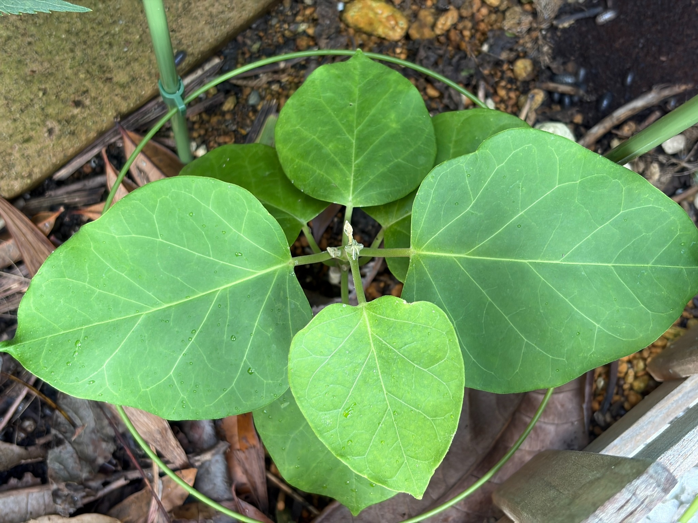

7月11日から22日、葉を広げた夏のキジョラン
8月2日のキジョランです。前回の7月11日から22日がたちました。5月31日に日当たりを確保できる場所へ移してからは、約2か月になります。
今回は株を上から眺めるような姿で、左右に大きな葉が広がり、その間に少し小さな葉が見えます。奥や下にも葉が重なり、株の中心を囲むように緑が広がっています。
7月11日は、手前の大きな葉と上側の葉が重なる立体感が印象的でした。今回は、左右へ張り出す大きな葉と、中央寄りの小さな葉との大きさの違いがよく分かります。
花や蕾はまだ見られません。今は、一枚一枚の葉の広がりと、中央の芽の様子を見守っています。

左右の大きな葉が、株の幅を作っています
特に存在感があるのは、左右に広がる2枚の葉です。中央の茎付近から葉柄が左右へ伸び、その先に幅広い葉が付いています。
左側の葉は写真の左端まで広がり、右側の葉も大きな葉面をこちらへ向けています。どちらも丸みのある形で、先端へ向かって細くなっています。葉の付け根から先端へ伸びる太い葉脈が、左右に広がる方向をはっきりと示しています。
葉柄の付く位置が見えるため、今回は大きな葉がどのように茎につながっているのかも分かりやすくなっています。広い葉が左右へ開き、その下や奥にも葉があることで、小さな株ながら横への広がりを感じます。
前回とは撮影する向きや距離が違うので、株幅や葉の大きさを数字で比べることはできません。それでも、左右の葉が株の姿を大きく形作っていることが、今回の印象に残ります。
手前には、ひと回り小さな明るい葉があります
左右の大きな葉の間、手前側には、ひと回り小さな葉が広がっています。丸みのある形は大きな葉と似ていますが、葉色は明るい黄緑色に見えます。
葉の付け根から先端へ続く中央の筋と、そこから左右へ分かれる葉脈がはっきりしています。葉身はすでに広がっていますが、左右の大きな葉とは大きさや色合いが異なり、株の中でも目を引く一枚です。
この葉の下には、さらに別の緑の葉が一部見えています。手前の小さな葉が下の葉に重なり、葉の大きさの違いと、上下の重なりを一緒に見ることができます。
小さく明るい葉は、これからどのくらい大きくなり、葉色がどう変わるのかも楽しみです。ただ、この一枚だけで出てきた時期までは決めず、今の大きさと色を残しておきたいと思います。
奥にも葉があり、株の中心を囲んでいます
奥側には、先端を上へ向けた丸みのある葉があります。手前の小さな葉より大きく、左右の大きな葉とは違う向きに広がっています。
その左右にも緑の葉が一部見えていますが、手前の葉に隠れる部分があり、輪郭をすべて追うことはできません。株全体では、左右・手前・奥へと葉が広がり、葉同士が重なっています。
7月11日の記録では、葉が前面を覆い、茎先が分かりにくくなっていました。今回は上からの角度で、葉が付く中央部分が見え、周囲に葉を広げる様子が分かりやすくなりました。
葉が増えたかどうかを見るときも、撮影角度によって見える範囲が変わることを意識しておきたいと思います。今回は重なりに隠れた葉もあるため、株全体の正確な葉数までは決めず、見えている葉の配置を記録しておきます。
葉色はそろわず、黄緑色から濃い緑色まであります
葉ごとに色の違いがあります。手前の小さな葉は明るい黄緑色で、奥の葉にはまだらな濃淡が見られます。左右の大きな葉は、それらに比べると落ち着いた緑色に見えます。
さらに、重なった奥や下の葉には、濃い緑色の部分があります。一つの株の中でも、葉の位置や大きさによって見え方が違います。
7月11日は葉に光と影が強く落ち、明るい部分と暗い部分が入り交じっていました。今回は前回ほど強い光の帯は目立ちませんが、葉の向きや重なりによって、明るさには違いがあります。
葉色の違いが、葉の若さによるものなのか、日当たりなど別の条件によるものなのかは、この姿だけでは分かりません。今後、明るい葉が大きくなったときに色が変わるのか、同じ濃淡が残るのかも見ていきたいと思います。
大きな葉では、細かな葉脈までよく見えます
左右の大きな葉には、中央を通る太い葉脈から、細い葉脈が枝分かれしています。その間をさらに細かな筋がつなぎ、葉面に網目のような模様が広がっています。
右側の葉は広い範囲が見えているため、付け根から先端方向へ伸びる筋だけでなく、葉の縁へ向かう細い筋も分かります。手前の小さな葉にも同じような葉脈があり、大きさが違っても、キジョランの葉らしい共通した形を感じます。
葉の縁には少し波打つ部分や浅いへこみがありますが、全体としては丸みのある広い葉面が保たれています。
葉の表面には、少量の水滴が残っています
左右の大きな葉や手前の葉には、小さな水滴が点々と付いています。6月27日のように葉全体が細かな水滴で覆われた姿とは違い、今回は葉面の様子を見ながら、一つ一つの水滴も分かる状態です。
葉には小さな白っぽい点や、ごく小さな跡も見られますが、見える範囲では、大きく抜けた穴や広い茶色の枯れ込みは目立ちません。
春の4月25日には、手前の葉に白っぽく傷んで穴になった部分がありました。今回の大きな葉では、そのような傷みが目を引く状態ではなく、広い緑の葉面が残っています。
以前の傷が治ったという意味ではありませんが、今、株に広がっている葉の姿として記録しておきます。
中央には、小さく淡い色の芽が見えます
今回は、左右の大きな葉の付け根の間に、上へ向いた小さな芽が見えます。先端は白っぽい淡い色で、細く折り畳まれたような形をしています。その付け根付近にも、淡い色の小さな部分があります。
6月27日は、中央に小さな緑の葉が立ち上がっていました。7月11日は葉の重なりで茎先が見えにくくなっていましたが、今回は中央部分が見え、先端の様子を残すことができました。
ただ、この小さな部分はまだ十分に開いておらず、どのような形に育つのかは、もう少し様子を見たいところです。淡い色に見えることだけで、順調に伸びているのか、先端に傷みがあるのかまでは決められません。
大きく広がった葉だけでなく、この中央の小さな芽が、次にどのように変化するかにも注目しています。
支柱の囲いの中で、まだコンパクトに育っています
株の周囲には、支柱につながった円形の緑の輪が見えます。その内側を中心に葉が広がり、左右の大きな葉は輪に重なるような位置まで伸びています。
この緑の輪は支柱の一部で、キジョランのつるではありません。今回の見える範囲では、植物のつるが長く伸びて支柱へ巻き付いている姿はありません。
中央の茎から葉柄が伸び、周囲へ大きな葉を広げた姿が続いています。葉の存在感に比べると、長いつるの動きはまだ目立ちません。
これから中央の先端が伸びていくのか、葉を広げる成長が続くのか、支柱との位置関係も見ながら記録したいと思います。
花や蕾はまだなく、葉と芽の変化を見守ります
8月2日の見える範囲には、開いた花や、花の蕾と分かるものはありません。中央には小さな芽がありますが、花の形やまとまった花房は見られず、開花の兆しとして記録できる状態ではありません。
今回は、左右に広がる大きな葉、手前の小さな明るい葉、奥や下に重なる葉が、それぞれ違う姿を見せています。同じ株でも葉の大きさや色がそろわず、その違いを見る楽しみがあります。
7月11日から22日がたち、今回も幅広い葉を保った姿を見ることができました。今後は、手前の小さな葉がどう育つかと、中央の芽がどのように開くかを楽しみに、観察を続けていきたいと思います。